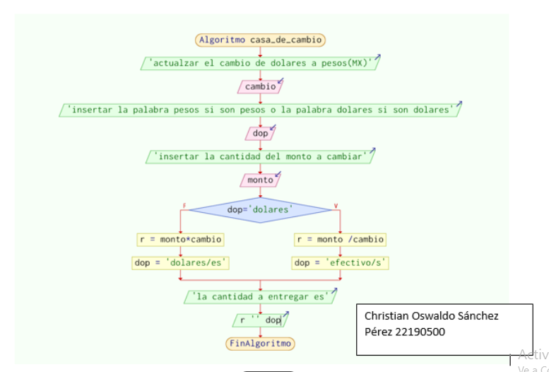

| Sub modulo 2 | Programación |
Bimestre 1
Plantea el uso de diagramas de flujo y algoritmos, analizando los elementos que los conforman, fomentando su desarrollo creativo, con la finalidad de solucionar problemas dentro de su contexto de manera lógica.
Explica de forma asertiva los lenguajes de programación, enunciando sus elementos y su metodología, para favorecer el diseño de programas utilizables en su contexto.
Bimestre 2
Propone la creación de códigos con instrucciones secuenciales, condicionales y/o repetitivas, examinando los tipos y métodos de lenguajes de programación, asumiendo la frustración como parte del proceso de aprendizaje, en la solución de problemas en su entorno. |
 |